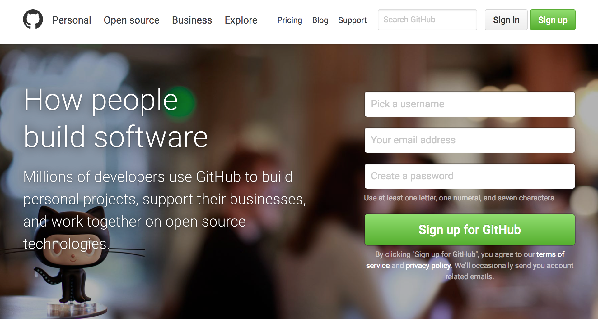
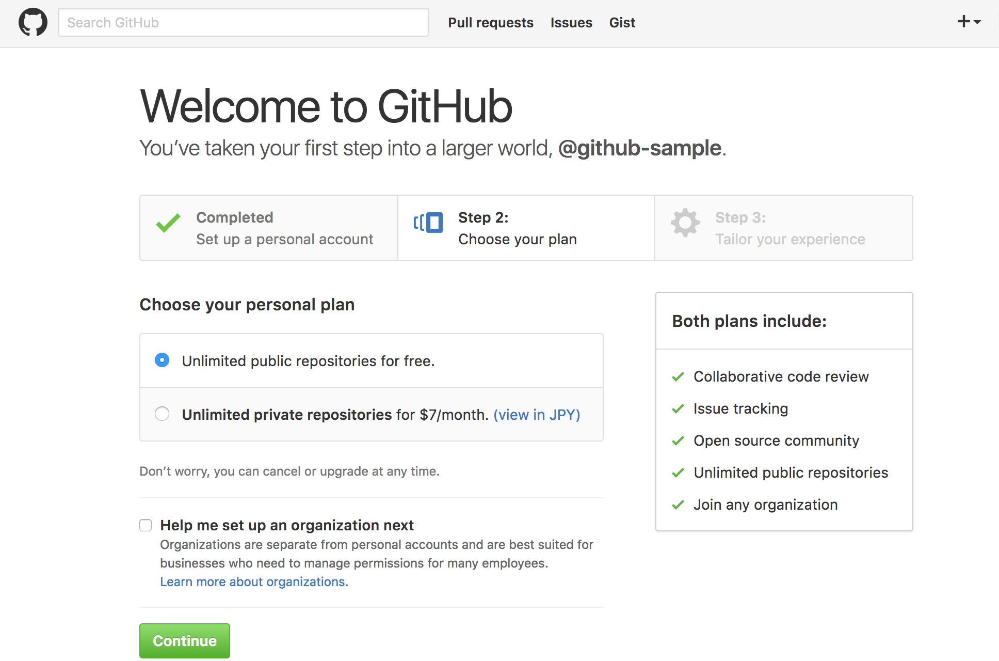
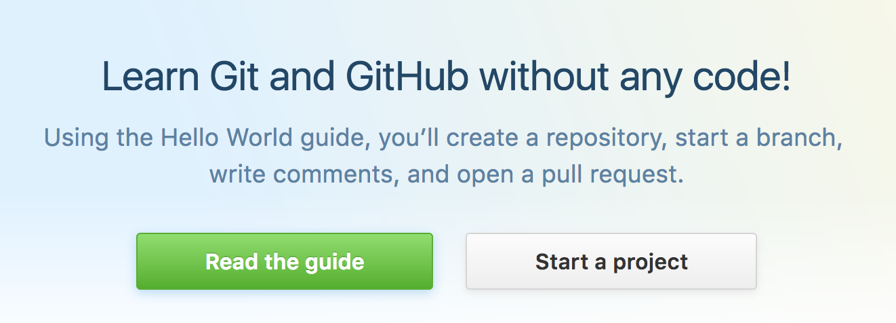
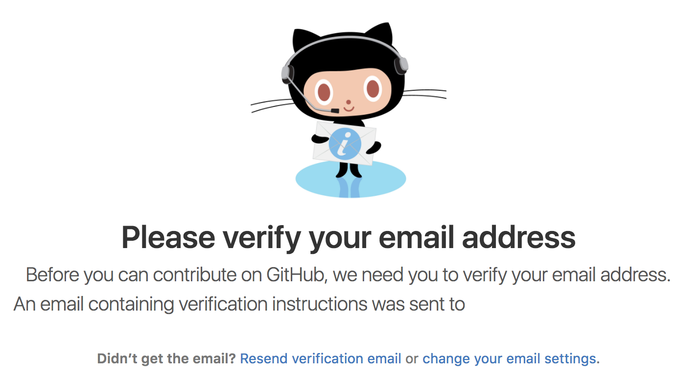
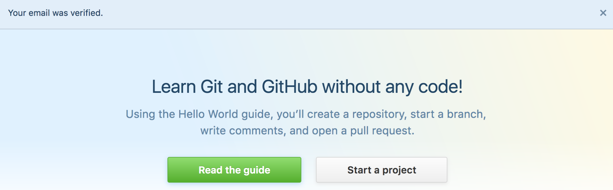

ローカル環境は準備できたので、GitHub側の準備をします。
How people build software · GitHub
まだアカウントを持っていなければ、上記サイトの右側のテキストボックスにそれぞれ、取得したいユーザー名、メールアドレス、設定したいパスワードを入力し、「Sign up for GitHub」をクリックします。
次に、無料版か有料版かを選択します。個人で使用するならまずは無料版でよいでしょう。「Unlimited public repositories for free.」を選択し、「Continue」をクリックします。
最後は、アンケート画面です。回答して「Submit」するか、そのまま「skip this step」でスキップできます。
以上で、ユーザー登録は完了です。
ただし、利用開始するにはアカウントを認証する必要があります。
登録したメールアドレスに認証用のメールが届いているので、文面中にある「Verify email address」をクリックします。
次のように「Your email was verified.」が表示されれば認証完了です。
先ほどと同じメッセージが再び表示されていますが、ここで「Start a project」をクリックします。